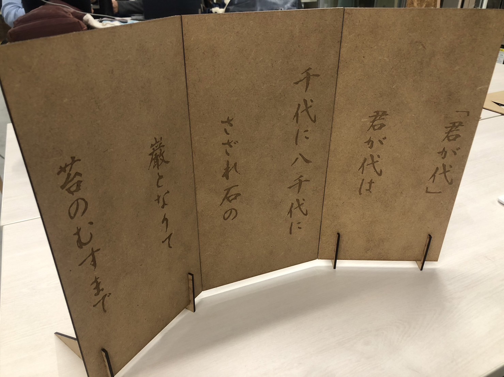

レーザーカッティング課題：君が代
1.テーマ
感動するレーザーカッター作品を作ろうと考えていたときに同じ講義を履修している2人と
君が代なら日本人なら感動しないわけない！、愛国心にあふれた作品になる！という考えで
指定サイズを人数で補い、大きな作品を作ることにしました。
2.制作
スケッチでおおよその構成を考える。
次にもととなる画像
この画像をイラストレーターにかける。
これを三等分にして出力していく。
想像よりもうまく出力できたのでアタッチメントを作って自立させることにした。
自立させることができなくてもう一度作り直してアタッチメントを三角にして差し込むように変更した。

何とか完成できました！
3.協力者
さつき
白岡
4.ファイル
AIファイル